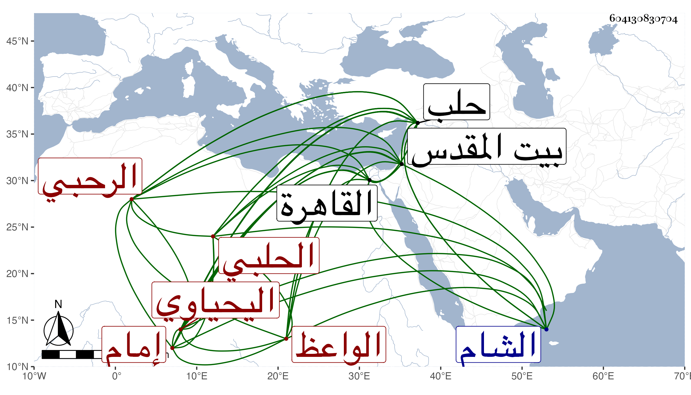

0902Sakhawi.DawLamic.ITO20230111-ara1.EIS1600.604130830704
Biography ID: 604130830704
615
محمد بن سالم بن محمد الشمس الرحبي الحلبي الواعظ إمام قانصوه اليحياوي . ارتحل إلى القاهرة فلازم شيخنا في البخاري ومقدمة شرحه وغير ذلك ثم سمع معنا في سنة تسع وخمسين بحلب على ابن مقبل وحليمة ابنة الشهاب الحسيني وعبد الواحد بن صدقة في آخرين، وكنا نعرفه بعدم التحري والضبط ثم بلغنا بعد أنه تكلم على العامة وإنه اختص بقانصوه المشار إليه وكان عنده بمكان حين نيابته بحلب ثم بالشام ثم كان معه ببيت المقدس حين إقامته به بطالا وتكلموا فيه كثيرا وفر من أميره لعظم جرمه .
